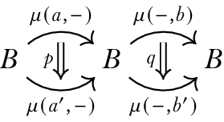

\(\newcommand{\textesh}{∫}\) \(\newcommand{\ensuremath}{}\)
The observation that sparks the following discussion is this: if we can manage to reformulate differential geometry in discrete terms (i.e. finite, without infinitesimals) then we may also be able to construct it synthetically in homotopy type theory (HoTT). Furthermore, if we do capture geometry in HoTT then there’s a chance that it can become clearer and smaller. We would then have new tools, a new audience, and a new program to (re)explore geometry, gauge theory, low dimensional topology, and mathematical physics.
Applied mathematicians and computer scientists have been developing discrete differential geometry (DDG) for many years. The 2003 Ph.D. thesis of Anil Hirani (Hirani, 2003) (see also the multi-author follow-up (Desbrun et al., 2005)) defines finite versions of vector fields, differential forms, the wedge product, the Hodge star, and several differential operators (exterior derivative, div, grad, curl, Laplace-Beltrami, Lie derivative). Hirani and others cite Whitney’s 1957 book Geometric Integration Theory (Whitney, 1957) which develops a theory of cochains by integrating smooth forms over chains. In 2004 Melvil Leok, Jerrold Marsden, and Alan Weinstein (Leok et al., 2005) defined discrete connections on principal bundles. This is probably the work most spiritually similar to this paper. The motivation for the above constructions was applied mathematics: modeling the differential equations of mechanics and fluid mechanics with the so-called “finite element” methods. The theory has been adopted and extended by the computer graphics community as well (see Keenan Crane’s course notes (Crane et al., 2013) for a gentle survey).
The applied category theory community has begun to develop category theoretic foundations and software libraries to increase the reusability and compositionality of finite element methods in science and engineering problems. See for example recent work to bring discrete exterior calculus into the AlgebraicJulia library (Morris et al., 2024) (Patterson et al., 2022).
For these classically-minded applied mathematicians DDG is defined on combinatorial manifolds such as simplicial complexes or polytopes, of any finite dimension. The 0-cells play the role of points, the 1-cells are path segments, and so on. They define \(n\)-forms as functions on the \(n\)-dimensional faces of the manifold into the real numbers, which is then extended by linearity to arbitrary \(n\)-chains. Exterior differentiation is defined by Stokes theorem (which is no longer a theorem in this setting), by which we mean the following.
Definition 1. (Exterior derivative in DDG.) Let \(\omega\) be an \(n-1\)-form on a combinatorial manifold \(B\), and let \(\Omega\) be an \(n\)-face of \(B\). Let \(\partial\) be the boundary operator on faces. The exterior derivative \(d\) is defined by \[d\omega(\Omega) = \omega(\partial\Omega).\]
At this point a study of DDG would move into chain complexes, where the forms of different dimensions are combined through the grading. Grassman algebras would be introduced, to convey the dependence of forms on orientation. The Leibniz rule (product rule) would be explored. Defining connections and curvature require constructing a codomain that is group-like and then creating more definitions about transport and holonomy. At that point major theorems like Gauss-Bonnet and Chern-Weil would be available to prove.
We will take a different path. We will not define forms, complexes, or Grassman algebras at all, we will view ordinary HoTT functions out of a given manifold-like type as synthetic discrete differential forms. The codomain will be a central H-space, which combines the features of the real numbers (in that functions can be pointwise multiplied) and classifying spaces of groups (so that maps into the H-space can classify bundles). We will then merely observe the emergence of various aspects of geometry.
We won’t be able to answer every question, so eventually we will stop and point to future directions.
We will rely on the lovely paper by Buchholtz, Christensen, Flaten and Rijke (Buchholtz et al., 2023).
The classical 2-sphere embedded in \(\ensuremath{\mathbb{R}}^3\) is curved at every point. But we can quantize this curvature by integrating it over a triangulation. Consider two great circles at 90 degree angles to each other, passing through the north and south pole, and take the equator. Convert this data into a combinatorial structure:
The set of vertices \(\{w, y, b, g, r, o, y\}\) where \(w\) is the north pole, \(y\) the south pole, and around the equator are the points of intersection of the three circles, labeled in eastward order \(\{b, o, g, r\}\). The names come from the colors on a standard Rubik’s cube.
The set of edges generated by the direct paths between adjacent vertices, denoted \(\{wb\}, \{wo\}\) and so on.
The set of faces generated by the triangular regions bounded by three vertices and three paths, denoted \(\{wbo\}, \{wog\}\) and so on.
Parallel transport in the tangent bundle around the \(\{wog\}\) face will rotate a tangent vector by 90 degrees clockwise. This is true for all the triangular faces and so the sum of the action of all 8 faces will be two rotations around the circle. We can compare this result to the standard smooth Gauss-Bonnet theorem.
We can leverage the syntax of HoTT by encoding the above in a map between HITs.
Definition 2. Denote by \(C_4\) the join \(\{b, g\}*\{r, o\}\). This is the equator of the discrete octahedral sphere. Denote by \(\ensuremath{\mathbb{O}}\) the octahedron given by the join \(\{w, y\}* C_4\).
Lemma 1. \((C_4, b)\simeq S^1\).
Lemma 2. \(\ensuremath{\mathbb{O}}\simeq S^2\).
Definition 3. Let \(\mathrm{BAut}_1(S^1)\stackrel{\mathrm{def}}{=}\sum_{X:\mathcal{U}}||X=S^1||_0.\)
Lemma 3. We have \((C_4, ||\{b, g, r, o\}\mapsto \mathsf{base}, br\mapsto \mathsf{loop}, \{rg, go, ob\}\mapsto \ensuremath{\mathsf{refl}}||_0):\mathrm{BAut}_1(S^1)\)
Lemma 4. \(\mathrm{BAut}_1(S^1)\) is equivalent to the type of \(S^1\)-torsors, and to the type of \((C_4,b)\)-torsors.
We will denote other terms of \(\mathrm{BAut}_1(S^1)\) with notation like \([w, o, y, r]\), meaning the square isomorphic to \(C_4\) but with the given four points, and with pointing given by whichever point we listed first. We will also introduce notation for maps \(f:[a, b, c, d]\to [w, x, y, z]\) by indicating where each item in the domain list is sent, like so: \(f\stackrel{\mathrm{def}}{=}[[x, y, z, w]]\).
\(C_4\) has an unpointed automorphism connected to the identiy which will play the role of rotation by 90 degrees:
Definition 4. Let \(R:C_4\to C_4\) be given by \(R(b)=o, R(o)=g, R(g)=r, R(r)=b, R(bo)=og, R(og)=gr, R(gr)=rb, R(rb)=bo.\) Let \(R':R=\ensuremath{\text{id}}\) be the obvious homotopy to the identity.
Definition 5. Define \(T_1:\ensuremath{\mathbb{O}}\to\mathrm{BAut}_1(S^1)\) by
\(T_1(b)=[w, o, y, r]\) (the equator from the point of view of \(b\) as the north pole).
\(T_1(o)=[w, b, y, g]\).
\(T_1(g)=[w, r, y, o]\).
\(T_1(r)=[w, g, y, b]\).
\(T_1(w)=[b, o, g, r]\).
\(T_1(y)=[b, r, g, o]\).
\(T_1(bo)=[[w, g, y, b]]\) (tipping one equator onto the other).
\(T_1(og)=[[w, o, y, r]]\).
\(T_1(gr)=[[w, g, y, b]]\).
\(T_1(rb)=[[w, r, y, o]]\).
\(T_1(wb)=[[y, o, w, r]]\).
\(T_1(wo)=[[b, y, g, w]]\).
\(T_1(wg)=[[w, o, y, r]]\).
\(T_1(wr)=[[b, w, g, y]]\).
\(T_1(yb)=[[w, r, y, o]]\).
\(T_1(yo)=[[b, y, g, w]]\).
\(T_1(yg)=[[y, r, w, o]]\).
\(T_1(yr)=[[b, w, g, y]]\).
At this point we have defined a map on the 1-skeleton of \(\ensuremath{\mathbb{O}}\). The only constraint we had to follow was functoriality, that the imgage of 1-paths had to be 1-paths between the images. The choices we made were motivated by the embedding of the Rubik’s cube in Euclidean 3-space.
Claim 1. \(T_1\) defines a principal circle bundle with connection over the 1-skeleton of \(\ensuremath{\mathbb{O}}\).
We now want to extend this map to all of \(\ensuremath{\mathbb{O}}\) by providing values for the eight faces. Here we will be guided by the classical relationship between a connection and its curvature. The curvature is computed from the connection, it doesn’t contain any new data. Classically the integral of curvature over a 2-cell is the holonomy given by transport around the boundary. Can we make this idea type check?
Take the closed path \(wb\cdot bo\cdot ow\) that begins and ends at \(w\), which bounds the face \(wbo\). We can calculate that \(T_1(wb)\cdot T_1(bo)\cdot T_1(ow) = [[r, b, o, g]] = R\), rotation clockwise one notch. A 2-path would then be a homotopy \(\ensuremath{\mathsf{refl}}_w=R\) which we called \(R'\). In a similar way all 8 faces (so long as the vertices in its name are listed in clockwise order) map to \(R'\).
This is all classical combinatorial stuff, but in a HoTT package. The fact that \(\mathrm{BAut}_1(S^1)\) is a 2-type gives us someplace to send all the dimensions of the HIT \(\ensuremath{\mathbb{O}}\).
Discrete differential forms are alien enough that we ought to provide evidence that we are describing honest classical differential geometry. In this section we will enumerate a wishlist of facts that we believe characterize the subject, and then provide evidence for them.
Connections can be described as an infinitesimal splitting of a bundle into horizontal and vertical components.
There’s a notion of tensorial that holds for forms but not for connections.
Differentials and directional derivatives satisfy the Leibniz (product) rule.
The Gauss-Bonnet theorem holds, relating the curvature of a 2-manifold to the Euler characteristic.
Having an everywhere nonvanishing tangent vector field implies the Euler characteristic is zero.
Characteristic classes of bundles can be computed using a connection (Chern-Weil theory).
The space of all connections on a fixed bundle is a contractible space on which the group of based gauge transformations (bundle automorphisms that are the identity on one selected fiber) acts freely.
The homotopy types of manifolds we care about have combinatorial presentations, and the real-cohesive shape modal operator maps between them.
Other questions we might explore:
Where is orientation in this story? Can we compute any examples of Stiefel-Whitney classes?
Can we define the Hopf bundle?
The classical story goes like this.
Definition 6. The vertical bundle \(VP\) of a principal bundle \(\pi:P\to B\) with Lie group \(G\) is the kernel of the derivative \(T\pi:TP\to TB\).
\(VP\) can be visualized as the collection of tangent vectors that point along the fibers. It should be clear that the group \(\mathrm{Aut}P\) acts on \(VP\): an automorphism \(\phi:P\to P\) sends \(V_pP\) to \(V_{\phi(p)}P\), where of course \(\pi(p)=\pi(\phi(p))\).
Definition 7. An Ehresmann connection on a principal bundle \(\pi:P\to B\) with Lie group \(G\) is a splitting \(TP=VP\oplus HP\) at every point of \(P\) into vertical and “horizontal” subspaces, which is preserved by the action of \(\mathrm{Aut}P\).
Being preserved by the action of \(\mathrm{Aut}P\) means that the complementary horizontal subspaces in a given fiber of \(\pi:P\to B\) are determined by the splitting at any single point in the fiber. The action of \(G\) on this fiber can then push the splitting around to all the other points.
The motivation for this definition is that we now have an isomorphism \(T_p\pi:H_pP\to T_{\pi(p)}B\) between each horizontal space and the tangent space below it in \(B\). This means that given a tangent vector at \(b:B\) and a point \(p\) in \(\pi^{-1}(b)\) we can uniquely lift the tangent vector to a horizontal vector at \(p\). We can also lift vector fields and paths in this way. To lift a path \(\gamma:[0,1]\to B\) you must specify a lift for \(\gamma(0)\) and then lift the tangent vectors of \(\gamma\) and prove that you can integrate the lift of that vector field upstairs in \(HP\).
Then, armed with the lifting of paths one immediately obtains isomorphisms between the fibers of \(P\). So the Ehresmann connection, the lifting of paths, and transport isomorphisms between fibers are all recapitulations of the structure that the connection adds to the bundle.
Moving now to HoTT, fix a type \(B:\mathcal{U}\) and a type family \(f:B\to\mathcal{U}\). Path induction gives us the transport isomorphism \(\prod_{p:x=_B y}\mathrm{tr}(p):f(x)=f(y)\). We can use this to define a type of dependent paths, also called pathovers or paths over a given path.
Definition 8. With the above context and points \(a:f(x), b:f(y)\) the type of dependent paths over \(p\) with endpoints \(a, b\) is denoted \[a\xrightarrow[{p}]{=}b.\] By induction we can assume \(p\) is \(\ensuremath{\mathsf{refl}}_a\) in which case \(a\xrightarrow[{p}]{=}b\) is \(a=_{f(x)}a\).
See (Bezem et al., 2023) for more discussion of dependent paths (where they use the term “path over”), including composition, and associativity thereof.
The following two lemmas explain how transport decomposes dependent paths into horizontal and vertical components. These two lemmas take place in the dependent sum \(\sum_{x:B}f(x)\).
Lemma 5. (Path lifting property, (Univalent Foundations Program, 2013) Lemma 2.3.2). Let \(f:B\to\mathcal{U}\) be a type family over \(B\) and assume we have \(a:f(x)\) for some \(x:B\). Then for any \(\alpha:x=_B y\), we have \[\ensuremath{\mathsf{lift}}(p, \alpha):(x,a)=(y,\mathrm{tr}(\alpha)(a))\]
Lemma 6. Let \(f:B\to\mathcal{U}\) be a type family over \(B\) and assume we have \(x,x':B,a:f(x),a:f(x')\). Then \[((x,a)=(x',a'))\simeq (x=x')\times (a=a).\]
This is a slight generalization of (Bezem et al., 2023) Lemma 4.14.1. To prove it we can assume \(x'\) is \(x\) in which case the lemma is a special case of the identity type of a sum type.
Let \(\alpha\) be an \(n\)-form on a smooth manifold \(B\). We are encouraged to think of \(\alpha\) as a function that takes \(n\) vector fields as input and returns a smooth function. Denoting by \(\Gamma TB\) the type of vector fields, this gives \(\alpha:(\Gamma TB)^n\to (B\to \ensuremath{\mathbb{R}})\). If this seems so natural as to be confusing, remember that forms are usually defined as sections of the exterior power of the cotangent bundle, and so we are moving between viewing a form as a section of a bundle, or as a function on tuples of vector fields.
An \(n\)-form viewed this way has the property that it is linear over \(B\to\ensuremath{\mathbb{R}}\) in every component, i.e. if \(f_1, \ldots, f_n:B\to\ensuremath{\mathbb{R}}\) then \(\alpha(f_1 X_1,\ldots, f_n X_n) = f_1\cdots f_n\alpha(X_1,\ldots,X_n).\) We also say that \(\alpha\) is tensorial in every argument. A function on vector fields is tensorial just when it’s linear over the action of smooth functions on vector fields. Examples include \(n\)-forms and metrics (which are symmetric instead of being antisymmetric like forms).
But what about connections and curvature?
The Leibniz rule states that if \(f, g:M\to \ensuremath{\mathbb{R}}\) are two smooth functions to the real numbers then \(d(fg) = fdg + gdf\). Here \(fg\) is the function formed by taking the pointwise product of \(f\) and \(g\). To examine this situation in HoTT we need type-theoretic functions \(f, g:M\to B\) from some type \(M\) to an H-space \(B\).
Definition 9. An H-space structure on a pointed type \((B,b)\) consists of
A binary operation \(\mu:B\to B\to B\)
A left unit law \(\mu_l:\mu(\mathrm{pt},-)=\ensuremath{\text{id}}_B\)
A right unit law \(\mu_r:\mu(-,\mathrm{pt})=\ensuremath{\text{id}}_B\)
A coherence \(\mu_{lr}:\mu_l(\mathrm{pt})=_{\mu(\mathrm{pt},\mathrm{pt})=\mathrm{pt}}\mu_r(\mathrm{pt})\)
A proof of left- and right- invertibility: \(\mu(a,-):A\simeq A\), \(\mu(-, b):A\simeq A\)
The analogue of the algebra of functions to \(\ensuremath{\mathbb{R}}\) is:
Proposition 1. For any type \(M\) and H-space \(B\) the type of maps \(M\to B\) with base point the constant map is an H-space under pointwise multiplication.
We claim thact the following deserves to be called the Leibniz rule.
Lemma 7. For any type \(M\) and H-space \(B\) and maps \(f,g:M\to B\) and path \(p:x=_M y\) we have \(\ensuremath{\mathsf{ap}}(fg)(p)=\mu(f(x),\ensuremath{\mathsf{ap}}(g)(p)) \cdot \mu(\ensuremath{\mathsf{ap}}(f)(p),g(y))\). (\(\cdot\) is concatenation of paths.)
The notation is temporarily sloppy, but by \(\mu(a, p)\) for a path \(p\) we mean the functorial action of multiplication by \(a\) on the left, on a path.g

Associated bundles in HoTT.
A nowhere-vanishing section is therefore a section of a decomposition \(\prod_{x:B}GL(n)=GL(n-1)\times GL(1)\) acting separately on the section direction and on the quotient of the vector space by the section direction.
A gauge transformation is a term inherited from physics. It’s an automorphism of a principal bundle \(P\to X\), meaning a homeomorphism of \(P\) that commutes with the projection to \(X\) and so acts on each fiber. It is further required to be equivariant under the action of the group \(G\), and so it’s very similar to the act of multiplying each fiber by a continuously varying element of \(G\). Another way to say that is that, since each fiber is a \(G\)-torsor, a gauge transformation is a continuously varying isomorphism of each fiber with \(G\), or a continuously varying choice of identity element. If we think of a \(G\)-torsor as the fundamental physical quantity, and a particular choice of identity element as a choice of units, then you can see why we might want to consider gauge transformations “physically meaningless”. Even though this group \(\mathrm{Aut}P\) is very large, we will sometimes want to quotient by it.
In HoTT this is easy to express. If a bundle \(P\to X\) is classified by \(f:X\to\mathrm{BAut}_1(S^1)\) then the group of gauge transformations is just the type \(f=f\) or in other words \(\Omega_f(X\to\mathrm{BAut}_1(S^1))\). The delooping \(B(\mathrm{Aut}P)\) of this group is then \(||X\to\mathrm{BAut}_1(S^1)||_{(f)}\), the connected component of this mapping type containing \(f\). In 1982 this was a theorem! (Atiyah & Bott, 1983)
Chern-Weil “theory” is actually a map, from the space of connections on the bundle \(\pi:P\to B\) to the cohomology ring of \(B\), plus the claim that these are the characteristic classes for the bundle. (cite Freed-Hopkins (Freed & Hopkins, 2013))
The combinatorial structure we have in mind is a nerve of a good open cover. What do we know about which smooth manifolds have such covers? While we’re at it, let’s survey all the combinatorial-flavored spaces and survey what smooth manifolds are homotopy equivalent to which structures.
What topological manifolds are equivalent to a CW complex? The answer is the composition of a few results summarized by Allen Hatcher1 (citing (Kirby & Siebenmann, 1977) and (Freedman & Quinn, 1990)):
Every topological manifold has a handlebody structure except in dimension 4, where a 4-manifold has a handlebody structure if and only if it is smoothable. This is a theorem on page 136 of Freedman and Quinn’s book "Topology of 4-Manifolds", with a reference given to the Kirby-Siebenmann book for the higher-dimensional case. It is then an elementary fact that an \(n\)-manifold with a handlebody structure is homotopy equivalent to a CW complex with one \(k\)-cell for each \(k\)-handle, so in particular there are no cells of dimension greater than \(n\). At least in the compact case a manifold with a handlebody structure is in fact homeomorphic to a CW complex with \(k\)-cells corresponding to \(k\)-handles; see page 107 of Kirby-Siebenmann. This probably holds in the noncompact case as well, though I don’t know a reference.